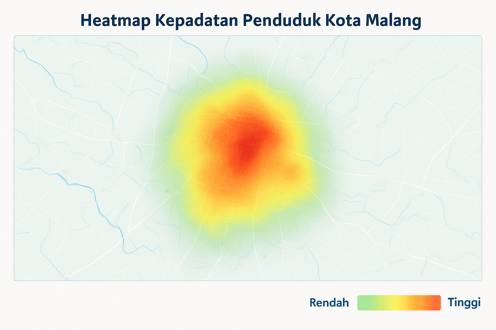

Analisis Kepadatan Penduduk
Kota Malang
Kecamatan Terpadat
KLOJEN
2.058 jiwa/km²
Kecamatan Tersparse
ARJOSARI
250 jiwa/km²
Rata-rata Kepadatan
~790 jiwa/km²
33 Kecamatan
Klasifikasi Kepadatan Penduduk
| Kategori | Rentang Kepadatan (/km²) | Warna |
|---|---|---|
| Sangat Padat | > 1500 | |
| Padat | 1000 - 1500 | |
| Sedang | 500 - 999 | |
| Rendah | < 500 |
Distribusi Kategori Kepadatan
Visualisasi Heatmap Kepadatan Penduduk

Semakin merah menandakan kepadatan penduduk yang lebih tinggi.